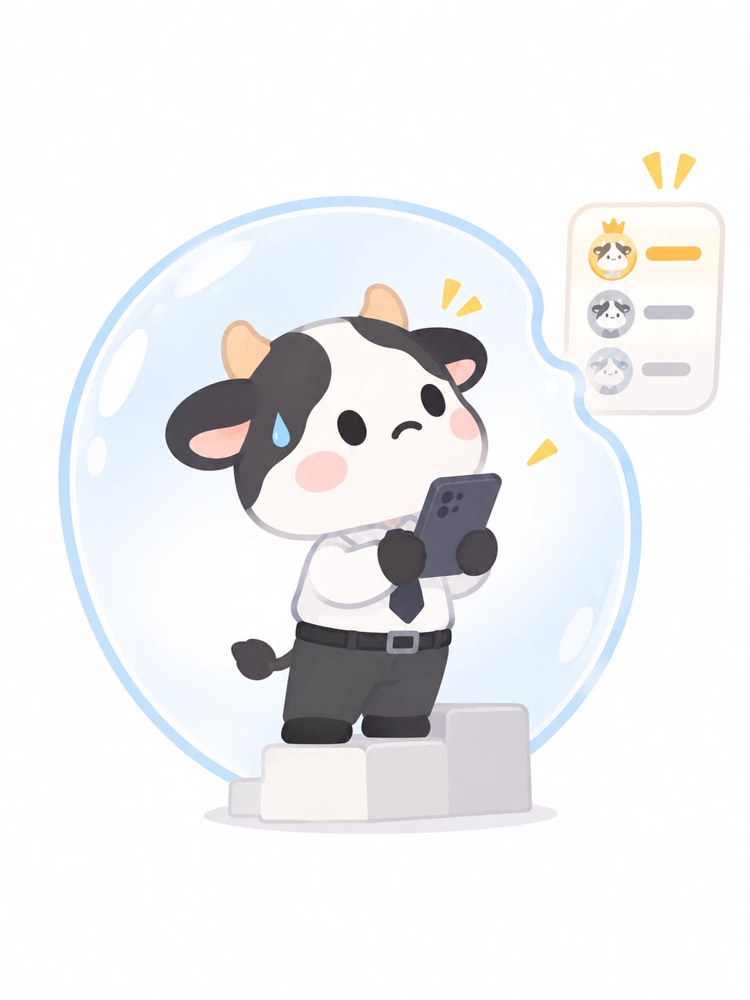
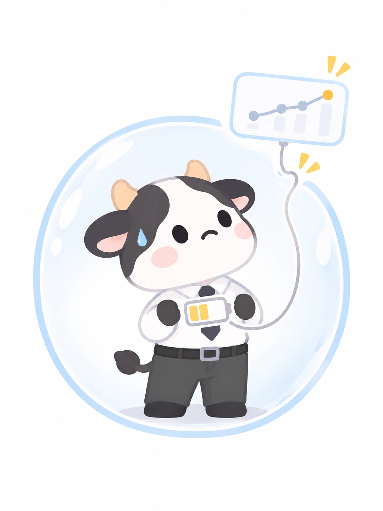
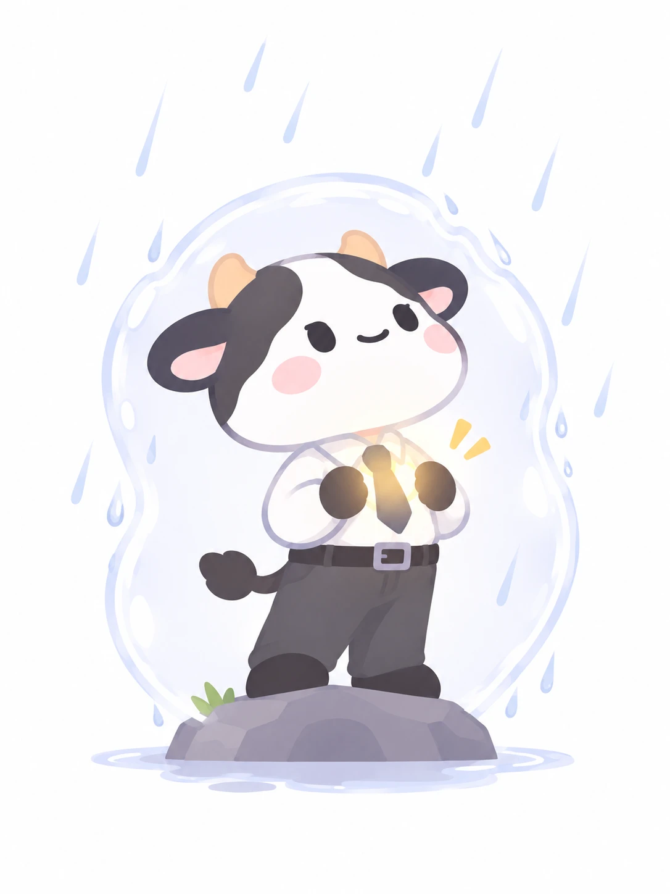
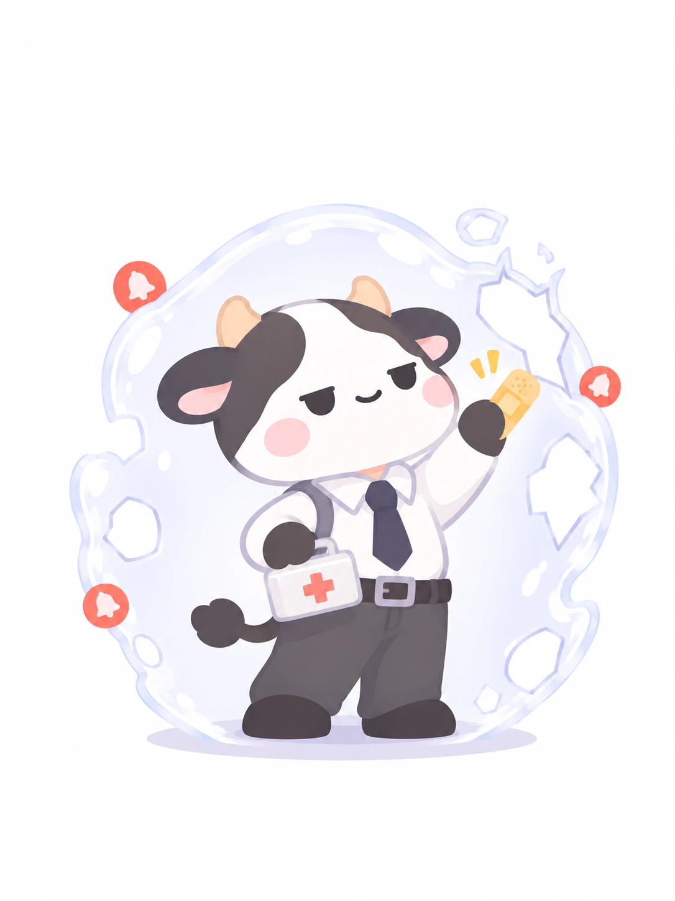

BFIH 钢化牛膜
四层膜都比较厚
下班能放下工作，别人的情绪和评价对你影响不大，工作出了问题也不会怀疑自己。注意别把有用的意见和别人的好意也一起挡在外面。
- 时间膜厚 · B 有界
- 情绪膜厚 · F 过滤
- 评价膜厚 · I 内参照
- 身份膜厚 · H 我是我
提醒
- 按牛膜理论的选择透过性，膜也不是越厚越好：别人有用的意见、真正着急的事、朋友的关心，还是要让它们进来。
牛膜人格测试（NMTI）根据吴天卓（tonywu）提出的牛膜理论，按时间膜、情绪膜、评价膜、身份膜四层的厚薄，把人分成 16 种牛膜人格。四个字母分别代表四层膜，每层取厚或薄。
| 层 | 厚 | 薄 |
|---|---|---|
| 时间膜 | B 有界 | O 在线 |
| 情绪膜 | F 过滤 | S 海绵 |
| 评价膜 | I 内参照 | E 外参照 |
| 身份膜 | H 我是我 | W 我是工位 |
BFIH 钢化牛膜四层膜都比较厚
下班能放下工作，别人的情绪和评价对你影响不大，工作出了问题也不会怀疑自己。注意别把有用的意见和别人的好意也一起挡在外面。

OFIH 在线佛系牛随时在线，但心态稳
消息随时回，活随时接，不过别人怎么说、公司怎么样，你都不太往心里去。主要问题是时间总被打断，身体容易累。

BSIH 情绪海绵牛容易被别人的情绪影响
下班时间守得住，也清楚自己是谁，就是周围人情绪一不好，你也跟着不好。领导脸色一变你就紧张，朋友吐槽完你难受一整天。

BFEH 排名焦虑牛很在意和别人比
边界清楚，情绪也稳，就是特别在意自己在别人眼里怎么样。刷到同龄人的好消息，会比加班还难受。
BFIW 以司为家牛把工作看得太重
时间、情绪、评价都处理得不错，只是岗位和你几乎绑在一起。平时没什么，一旦换工作或者被裁，影响会很大。

OSIH 全天客服牛随叫随到，还要照顾大家的情绪
谁找你你都在，谁不高兴你都接着。好在你对自己的判断比较稳，也知道工作不等于自己。

OFEH 卷王预备牛时间都给了工作，又在意排名
情绪还算扛得住，但下班时间没有边界，又很在乎别人的评价，容易越干越累。

OFIW 主人翁牛把公司的事当自己的事
随时在线，也觉得工作就是自己的全部，干劲很足，心态也稳。风险是除了工作，没有别的东西撑着你。

BSEH 讨好型牛在意别人的情绪和看法
能准时下班，也知道工作不等于自己，但很在意别人高不高兴、怎么看你，经常为了不得罪人委屈自己。

BSIW 老实人牛默默把事扛下来
别人的情绪你接着，工作也看得很重，但下班时间守得住，对自己的评价也比较稳。

BFEW 绩效挂钩牛自我价值靠绩效撑着
时间和情绪都有边界，但对自己满不满意，几乎全看绩效和职位。考核一不好，整个人状态就跟着下来。

OSEH 苦中有底牛三层膜都薄，身份膜还在
时间、情绪、评价三层都比较薄，每天都挺累。好在你清楚工作不等于自己，可以从这里开始慢慢补。
OSIW 自洽老黄牛不太在乎别人怎么看
随叫随到，别人的情绪也照单全收，工作几乎就是生活的全部。但你不太在意外界评价，自己觉得值就能一直干下去。
OFEW 淡定卷王牛情绪稳，其他三层都薄
时间都在工作上，很看重排名，也把岗位当成了自己。情绪上扛得住，所以别人看你一直挺稳，但能撑住你的东西其实不多。

BSEW 准点内耗牛下班了，脑子还在上班
能准点下班，但别人的情绪、评价和工作上的得失会一直在脑子里转，回家了也放不下。

OSEW 薄膜牛马四层膜都比较薄
外面一点事都能影响到你，干得多，想得也多。不用一下子全改，先从最薄的那层开始。